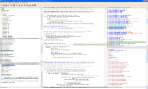
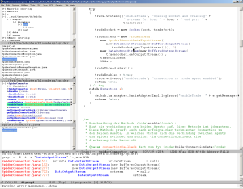
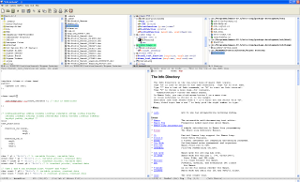
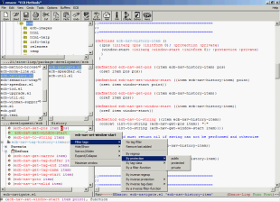
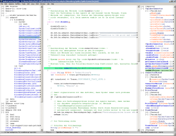
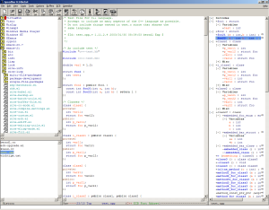

|

ECB 2.40 running in Emacs 22.3 showing a leftright-layout for big screens. ECB uses image-icons, shows the version-control state of the files. The leftmost/lowest window shows a directory-bucketized history and the rightmost/lowest window shows the output of the semantic-analyzer for intellisense (e.g. possible completions). |

ECB 1.90 running in Emacs 21 showing the ECB-tree-windows in a smaller font and a grep-output in the compile-window. |
|

ECB 2.40 running in Emacs 22.3 showing a layout with ECB-tree-windows located on top and a splitted edit-window. Current edit-window contains a complex C++ source file and its contents are shown in the methods-window. |

ECB 2.23 running in XEmacs 21.4 under Windows XP showing emacs-lisp sources and the popup-menu of the methods-buffer. |
|

ECB 1.90 running in Emacs 21 showing a left-right-layout for big screens which displays source-files in the directory browser. |

ECB 1.90 running in XEmacs 21.4 showing a layout with an integrated speedbar, a history- and a methods-window. |